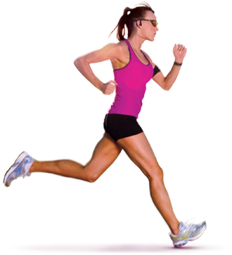
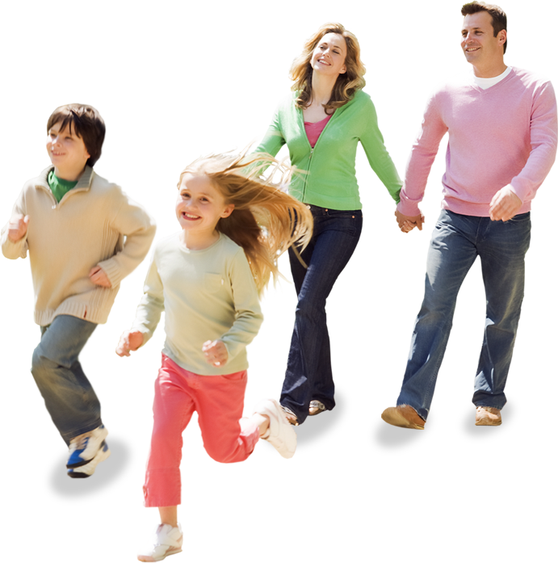
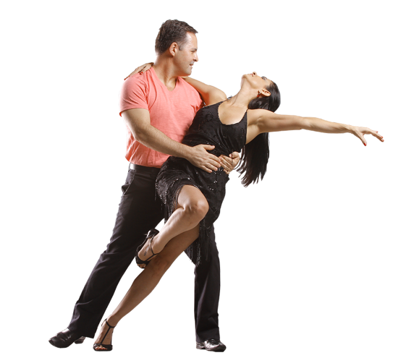
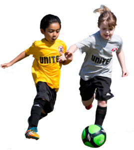
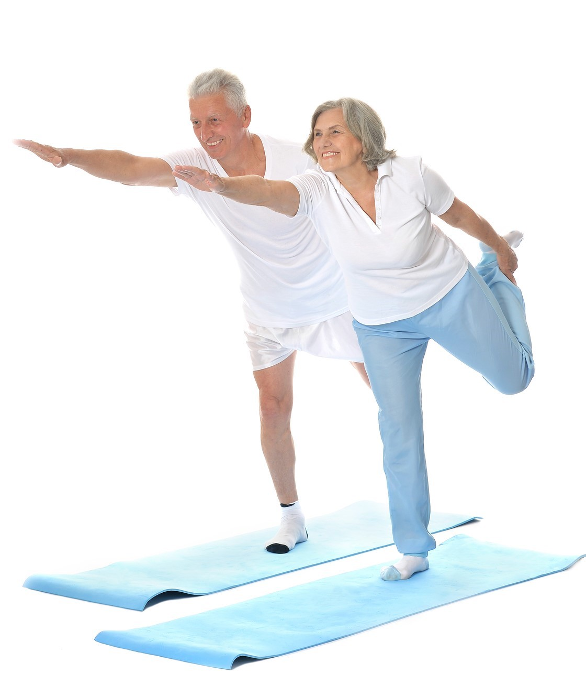
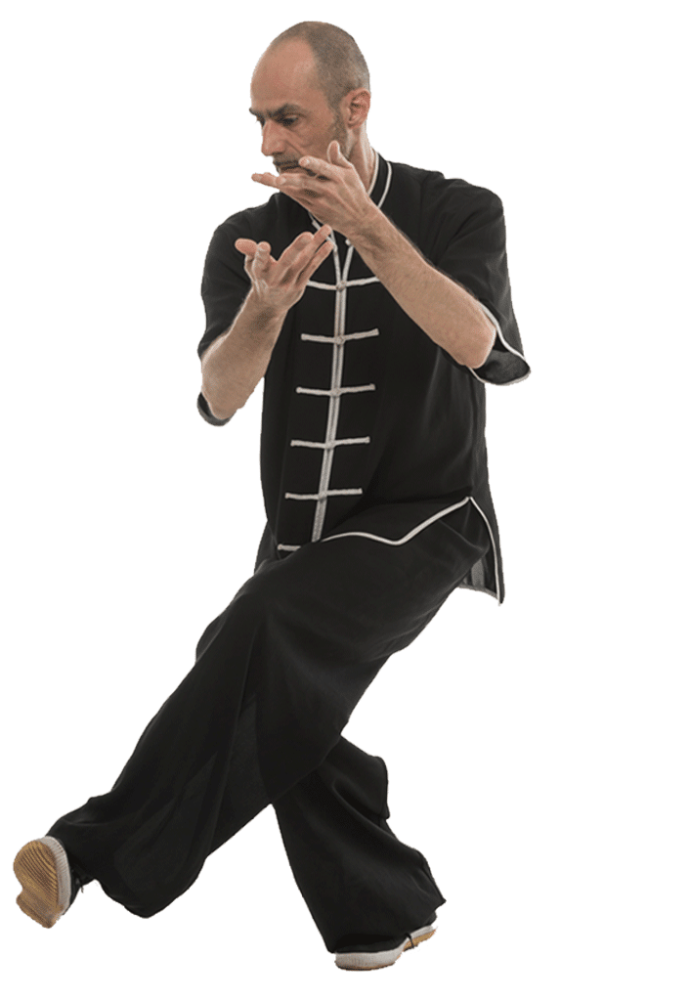
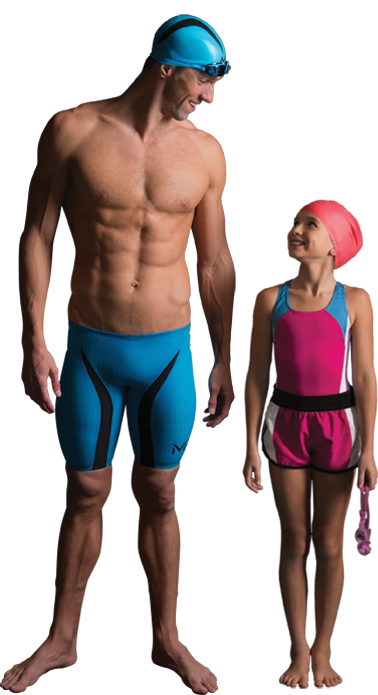

Correr
Um dos exercícios físicos que mais ganhou espaço no coração das pessoas nos últimos tempos foi a corrida de rua. Esta modalidade aeróbica, também configurado como um desporto, visa a boa forma e a saúde física e mental. Correr acelera o metabolismo, fazendo a queima de calorias acontecer mais eficientemente. O aumento do metabolismo, provocado pela corrida, faz com que o organismo continue acelerado por mais alguma horas após o exercício.
Os benefícios da corrida de rua são muito amplos:
1- Ajuda a emagrecer e fortalece os músculos;
2- Previne e trata a osteoporose;
3- Melhora a resistência muscular;
4- Reduz os níveis de colesterol no sangue;
5- Melhora a qualidade do sono;
6- Desenvolve a capacidade respiratória;
7- Alivia o estresse e a tensão;
8- Melhora a capacidade cardiovascular e previne infartes e hipertensão.
O tempo da corrida vai depender da capacidade de cada um: o importante é não exagerar. O ideal é que se façam sessões de 30 a 45 minutos, de 2 a 4 vezes por semana e possuir outros hábitos saudáveis, como comer alimentos frescos e pouco calóricos.

Antes da corrida
- Para não correr o risco de sentir fome na hora da corrida, coma uma fruta (banana, maçã são ideais) 15 minutos antes do treino;
- Não coma alimentos pesados e de difícil digestão;
- Use roupas de tecidos leves e confortáveis e, tênis apropriados para corrida.
Durante a corrida
- Durante uma corrida, a frequência cardíaca (FC) deve ficar entre 60% e 75% da FC máxima, que pode ser estimada em 220 menos a idade da pessoa. Assim você terá menos chances de sentir dores articulares e musculares após o exercício.
- O treinamento começa com caminhadas leves a moderadas que irão sofrer aumento no ritmo das passadas com o tempo. Depois de um tempo, corra durante alguns minutos e depois volte ao ritmo da caminhada. Descanse um minuto e repita o processo, acelerando novamente.
Depois da corrida
- Após a corrida, é muito importante que se façam alongamentos, para evitar lesões.
- Deve-se beber líquidos como água de coco ou água com limão para hidratar o corpo e fazer uma refeição leve para repor os nutrientes perdidos.
Caminhar
A caminhada é uma atividade física indicada por cardiologistas para emagrecer e manter a saúde do coração e da mente.
Os benefícios da caminhada diária são muito variados e podem incluir:
1- Redução do inchaço nas pernas e tornozelos;
2- Prevenção da obesidade e ajuda a perder peso;
3- Melhora da circulação sanguínea;
4- Fortalecimento de todos os músculos do corpo;
5- Melhora da postura corporal;
6- Diminui a ansiedade e estresse;
7- Relaxamento dos músculos da nuca e dos ombros;
8- Prevenção de complicações cardiovasculares, como infartes e hipertensão.
Estes benefícios acontecem quando o indivíduo caminha pelo menos 2 horas e meia por semana e possui outros hábitos saudáveis, como comer alimentos frescos e pouco calóricos.
Os benefícios da caminhada na gravidez são:
- Redução dos pés inchados no final do dia;
- Melhora o sono da gestante;
- Ajuda a relaxar;
- Evita ganhar peso em excesso;
- Diminui o risco de pré-eclâmpsia e diabetes gestacional.
Dicas para emagrecer com a caminhada
Esta atividade pode ser feita em qualquer idade e em qualquer lugar, seja no ginásio, na praia ou rua e para que a caminhada seja saudável e queime calorias é importante:
- Andar rápido, de forma a que a respiração acelere e não seja possível conversar facilmente;
- Contrair os músculos da barriga de forma a manter uma postura correta;
- Balançar os braços vigorosamente enquanto caminhada, pois melhora a circulação sanguínea.
Dançar
A dança é um tipo de atividade aeróbica que permite queimar até 600 calorias por hora, de acordo com a velocidade e intensidade da modalidade que se está praticando. Além disso, como é uma atividade divertida, a dança torna o processo de emagrecimento menos aborrecido, ajudando as pessoas a manter um plano regular de fazer exercício durante a semana.
Tipo de dança Calorias gastas por hora
Hip hop 350 a 600 calorias
Danças de salão 200 a 400 calorias
Ballet 350 a 450 calorias
Zumba 300 a 600 calorias
Os benefícios da dança são:
1. Ajuda a perder peso facilmente e de forma divertida;
2. Estimula a memória, evitando o surgimento de demência ou Alzheimer;
3. Melhora a postura e flexibilidade, evitando muitos tipos de dor;
4. Reduz o estresse acumulado durante o dia no trabalho ou em casa;
5. Evita a depressão, devido à produção de endorfinas que funcionam como antidepressivos naturais;
6. Melhora o equilíbrio, com base no fortalecimento de certos músculos.
De jogar Futebol

A pratica de futebol faz com que ocorra uma grande queima de gordura, sendo possível perder, em média, 250 calorias a cada 30 minutos. É um excelente método para ajudar no controlo da pressão arterial e melhora a flexibilidade, a agilidade e os reflexos
Os benefícios de jogar futebol casualmente ou por desporto são:
1. Ajuda a emagrecer e aumenta a capacidade respiratória;
2. Aumenta a massa e flexibilidade muscular;
3. Ajuda a baixar a pressão alta ao bombear melhor o sangue;
4. Fortalece os ossos e melhora o equilibrio;
5. Reduz do risco de quedas e fraturas;
6. Diminui as chances de estresse e depressão;
7. Previne o surgimento do Alzheimer.
Andar de Bicicleta
Andar de bicicleta regularmente traz benefícios, como melhorar o humor, porque liberta serotonina na corrente sanguínea e também melhora a sua circulação, sendo útil para combater o inchaço e a retenção de líquidos.
Mas, outros benefícios igualmente importantes incluem:
1- Emagrecer porque é um exercício que gasta cerca de 200 calorias em 30 minutos;
2- Engrossar as pernas porque fortalece esta musculatura, sendo útil também para combater a celulite desta região;
3- Reforçar o sistema imunitário, deixando o corpo mais resistente aos micro-organismos;
4- Melhorar a saúde do coração porque com o condicionamento físico o coração pode fazer menos esforço para bombear a mesma quantidade de sangue;
5- Aumentar a capacidade respiratória porque promove a expansão dos pulmões, havendo maior oxigenação no sangue;
6- Acelerar o metabolismo, fazendo o indivíduo gastar mais calorias mesmo estando parado.
Para quem está muito acima do peso, andar de bicicleta é mais indicado do que caminhar ou correr porque há menos impacto sobre as articulações. No entanto, para andar de bicicleta e não prejudicar a coluna é importante usar o tamanho certo da bicicleta e colocar o selim e o guiador na altura correta.
Praticar Yoga
O yoga tem diversos benefícios para a saúde, tanto para mulheres como para homens, porque trabalha o corpo e a mente de forma interligada, com exercícios que auxiliam o controlo do estresse, ansiedade, dores no corpo e na coluna, além de melhorar o equilíbio e facilitar o emagrecimento.
Para se aproveitar todos os benefícios desta atividade, são necessários, pelo menos, 3 meses de prática, pois, a pessoa adquire consciência corporal e passa a controlar melhor a mente para que ela influencie o corpo e, assim, todo o organismo trabalhe de forma harmônica e equilibrada.
1. Diminui o estresse e ansiedade, devido à sensação de relaxamento, com aumento da auto-confiança;
2. Promove o condicionamento físico, aumentando a massa magra e deixa o corpo em forma, com maior definição e músculos tonificados;
3. Facilita o emagrecimento, devido ao controlo da ansiedade e vontade de comer, diminuindo a quantidade de calorias consumidas;
4. Alivia dores corporais, corrigir alterações, como contraturas;
5. Controla a pressão e os batimentos cardíacos, diminuindo os níveis de hormonass do estresse, como cortisol e adrenalina.
6. Melhora o sono, pois aumenta a produção de melatonina, hormona que regula o ciclo do sono, deixando-o com mais qualidade e profundidade.
7. Melhora o prazer no contato íntimo, devido a maior capacidade de relaxar e ter melhor receptividade ao parceiro. Além disto, com o controlo da concentração e alívio da ansiedade, problemas como dificuldade para atingir o orgasmo, disfunção erétil, ejaculação precoce podem ser controlados.
Benefícios na saúde dos idosos
Pessoas da terceira idade podem beneficiar muito com a prática desta atividade, pois fortalece os músculos, alívia de dores pelo corpo, melhora o equilíbrio, flexibilidade e atenção.
É importante lembrar que os exercícios praticados nesta atividade devem ser adaptados às condições e necessidades de cada pessoa, para que sejam feitos de forma natural e de acordo com os benefícios que a pessoa procura, evitando assim, lesões, torcicolos ou outras sensações.
Benefícios para a saúde das gestantes
Além de ser benéfico para qualquer mulher, o yoga também pode trazer grandes benefícios durante a gravidez, pois melhora a flexibilidade e facilita a adaptação às mudanças do corpo neste período, tonificando os músculos, alongando articulações, e tornando a gestação menos dolorosa e tensa. Além disto, os movimentos respiratórios também ficam mais sincronizados, diminuindo a sensação de falta de ar que acontece nos períodos finais da gestação.
Neste período, a prática de exercícios físicos deve ser orientada por um profissional de saúde e liberada pelo obstetra, devendo ser, de preferência, de forma leve e relaxante.
Praticar Tai Chi Chuan
O Tai Chi é mais conhecido como Tai Chi Chuan, que significa «o caminho supremo do punho». É uma arte marcial não agressiva que inclui meditação e exercício para promover e melhorar a saúde geral. A prática é um conjunto de exercícios lentos e graciosos executados segundo um padrão definido. Revelou-se benéfico para pessoas que sofriam de artrose, ajudou a recuperar de lesões, bem como no processo de convalescentes de ataques cardíacos.
1. Ajuda a fortalecer o sistema muscular e o sistema ósseo;
2. Resulta em mais flexíbilidade e menos susceptíbilidade a problemas de coluna;
3. Melhora a parte cognitiva do cérebro, melhorando a memória e o raciocínio;
4. Combate o estresse, a ansiedade, a tensão, a pressão arterial e a circulação;
5. Melhora a respiração, ao controlar a pressão e os batimentos cardíacos.
Nadar
Atualmente, a natação é considerada um dos desportos mais completos, eficazes e úteis na hora de desenvolver um bom estado fisco e de contar com um sistema respiratorio e muscular sólido. Indicado para todas as idades, idosos, grávidas ou bebês.
1. Trabalha a maior parte dos músculos do corpo, aumentando a flexibilidade muscular;
2. Fortalece as articulações e ligamentos, melhorando também a postura do corpo;
3. Ajuda a emagrecer e queimar gordura, pois os músculos são forçados a exercer um maior esforço;
4. Combate o estresse e melhora a memória, devido à melhor circulação sanguínea e oxigenação do sangue;
5. Melhora a respiração e a capacidade aeróbica, com base numa melhor contração e expansão dos pulmões;
6. Ajuda a reduzir sintomas de asma e alergias;
7. Controla o colesterol e reduz os diabetes.;
8. Aumenta a auto-estima, pois a pessoa sente-se mais segura da sua boa forma e melhor qualidade de vida;
9. Ajuda a recuperar de lesões e reduz o risco a estas.
nas crianças
 - Estímula o crescimento e desenvolvimento;
- Estímula o crescimento e desenvolvimento;
- Fortalece os ossos, músculos e articulações;
- Melhora a postura e equilíbrio;
- Aumenta a sensibilidade à insulina, no caso de diabetes;
- Melhora o perfil lipídico, no caso de obesidade;
- Regula a memória, aprendizagem, sede, fome e sono;
- Melhora a autoestima, o foco e a concentração.
nos adolescentes
- Ajuda a prevenir a obesidade e outras doênças;
- Promove o relacionamento social e a independência, quanto ao relacionamento em grupo;
- Melhora a postura e a disciplina, além de auxiliar na composição corporal;
- Aumenta a força, agilidade, flexibilidade, resistência muscular e condição cardiorespiratória.
nos adultos
- Previne a doença coronariana, hipertensão arterial, acidente vascular cerebral, diabetes tipo 2, síndrome metabólica e cancros;
- Suscetibilidade menor a fraturas;
- Reduz o risco de desenvolver dores lombares, podendo ajudar no tratamento de situações dolorosas;
- Aumenta o poder de relaxamento e melhora a qualidade do sono;
- Melhora a força e a flexibilidade muscular;
- Propicia atingir a manutenção do peso, ter uma massa e composição corporal saudável.
nos idosos
- A atividade física para idosos ajuda a fortalecer os músculos, ajudando a caminhar melhor, previne doenças como osteoporose, depressão e diabetes, hipertensão, derrames, varizes, obesidade, cancro, ansiedade, ...;
- Melhora a força muscular, diminuindo o risco de quedas e facilita os movimentos dos braços, pernas e tronco;
- Reduz o consumo de remédios porque melhora a sensação de bem-estar, reduzindo as dores;
- Aumenta o apetite, evitando problemas resultantes da falta deste e, melhora a memória, reduzindo o risco de Alzheimer;
- Diminui o isolamento social porque aumenta a proximidade com outras pessoas;
- Aumenta a autoestima, a confiança e aceitação da imagem que o idoso possui de si mesmo, trazendo mais bem-estar geral.